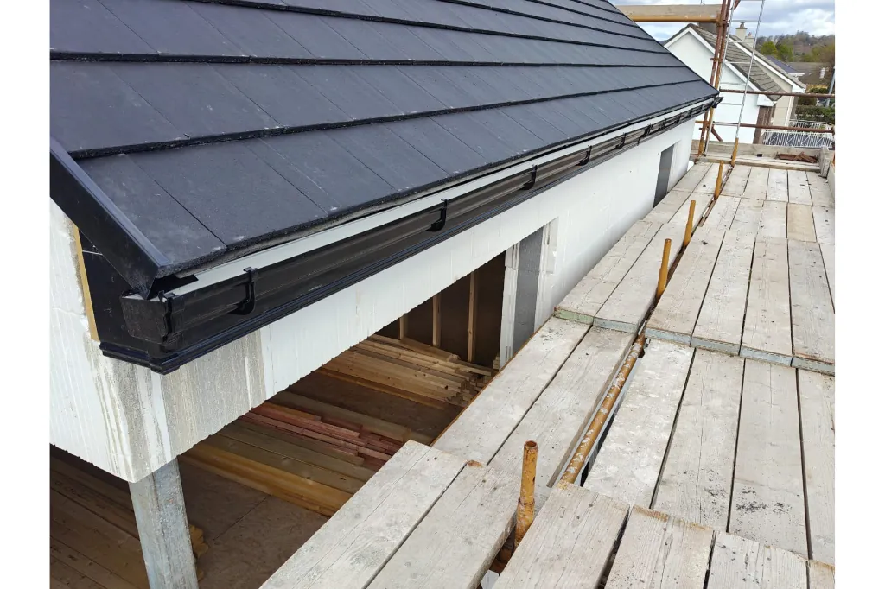

Local gutter repair, cleaning and replacement for homes and businesses across Tallaght and the wider South West Dublin area. Our mobile teams know the local roads well and can often be with you the same day — with an upfront price agreed before any work starts.
Tallaght is one of Dublin's largest suburbs, with everything from the older estates around Old Bawn and Jobstown to the newer builds out towards Citywest and Saggart. That range of housing means every gutter type imaginable, and after 30 years working across South West Dublin there isn't much we haven't seen.
The open ground near the Dublin Mountains funnels a lot of wind and rain into Tallaght, which is hard on brackets, joints and downpipes. We fix the underlying problem rather than patching it, so your gutters keep doing their job through the next storm.

Our full range of gutter services is available right across Tallaght and nearby
Leaking joints, sagging runs and loose brackets repaired fast across Tallaght. Same-day available.
Learn moreLeaves and moss block gutters fast around Tallaght. We clear and flush the full system.
Learn moreFull PVC or aluminium gutter replacement in a range of colours to match your Tallaght home.
Learn moreNew uPVC fascia and soffit to smarten your roofline and stop water getting behind the gutter.
Learn moreBlocked, detached or damaged downpipes cleared, resecured or replaced anywhere in Tallaght.
Learn moreGutter services for shops, schools, offices and apartment blocks across Tallaght.
Learn moreIf you're in or near any of these areas, we can help
Not sure if we reach you? Contact us — we cover all of Dublin 24 and the surrounding area.
"Gutters were overflowing onto the path every time it rained. The lads cleared and realigned the whole front in an afternoon. No fuss, fair price."
"Needed new gutters on a newer build out in Citywest. Tidy job, matched the existing colour perfectly and left no mess."
"Came out same day for a leak that was getting into the soffit. Sorted it quickly and explained exactly what was wrong."
Yes — we cover Tallaght and the surrounding areas including Firhouse, Templeogue, Greenhills, Jobstown, Citywest. If you're nearby and unsure, just give us a call.
In most cases, yes. We run mobile teams across South West Dublin, so for urgent leaks or storm damage we can usually get to you the same day at no extra charge.
Every job is different, so we quote on-site after a quick inspection. There's no call-out fee and the price is agreed upfront before any work begins — no surprises on the bill.
Never. We always repair where possible and only recommend replacement when it's genuinely the better option. You'll get both options explained honestly.
Yes — we're fully insured and all our work is guaranteed. If a repaired section fails, we'll come back and put it right at no charge.